Unsupervised skill learning aims to learn a rich repertoire of behaviors without external supervision,
providing artificial agents with the ability to control and influence the environment. However, without
appropriate knowledge and exploration, skills may provide control only over a restricted area of the
environment,
limiting their applicability. Furthermore, it is unclear how to leverage the learned skill behaviors for
adapting to downstream tasks in a data-efficient manner. We present Choreographer, a model-based agent
that exploits its world model to learn and adapt skills in imagination. Our method decouples the
exploration and skill learning processes, being able to discover skills in the latent state space of the
model. During adaptation, the agent uses a meta-controller to evaluate and adapt the learned skills
efficiently by deploying them in parallel in imagination. Choreographer is able to learn skills both
from offline data, and by collecting data simul-
taneously with an exploration policy. The skills can be used to effectively adapt to downstream tasks,
as we show in the URL benchmark, where we outperform
previous approaches from both pixels and states inputs. The learned skills also explore the environment
thoroughly, finding sparse rewards more frequently, as
shown in goal-reaching tasks from the DMC Suite and Meta-World.
Choreographer
World model
The agent learns a generative world model, by reconstructing environment observations.
The world model is used to generate imaginary trajectories in model state space.
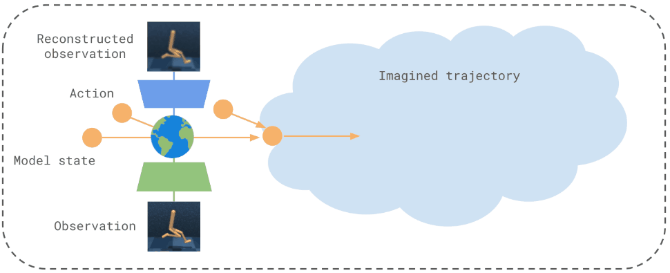
Skill discovery
Skills are discovered via representation learning with a VQ-VAE on top of the world
model states.
The VQ-VAE codebook clusterizes the model state space into N different clusters.
Each code represents a skill. The N skills learned correspond with the N centroids
of the clusters.
Skill learning
A skill policy for each code is learned in the agent model’s imagination.
Skill policies reach their corresponding code states and maximize state entropy.
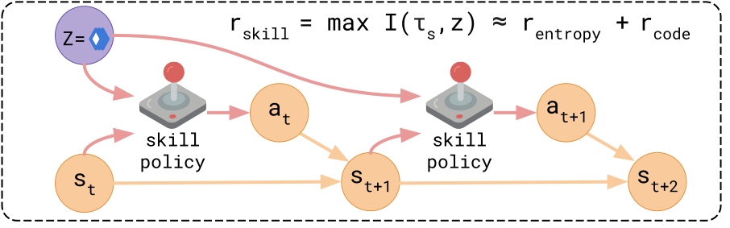
Skill adaptation
To adapt for downstream tasks, a meta-controller selects which skills to employ and
adapt.
Skills are evaluated and fine-tuned in the model’s imagination.
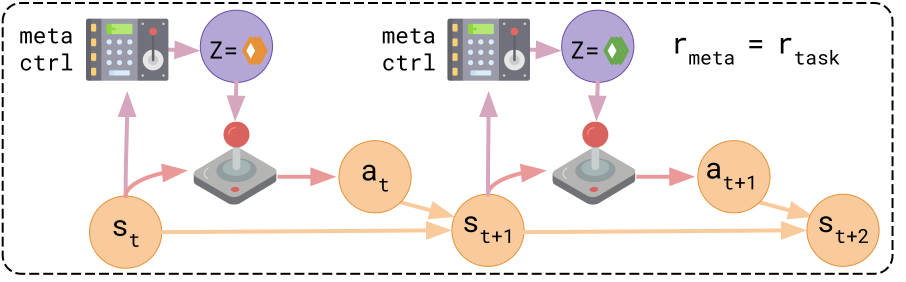
Skill visualization
We display the skill codes and policies learned by Choreographer. For each skill, we show:
Top: the state corresponding to the skill, reconstructed in image space;
Bottom: The skill policy behavior, deployed in the environment for 100 steps.
Walker
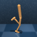
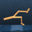
Quadruped
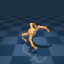
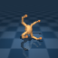
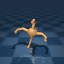
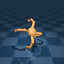
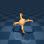
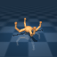
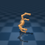
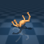
Jaco
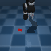
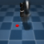
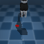
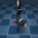
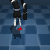
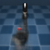
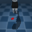
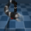
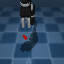
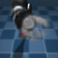
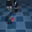
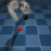
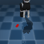
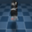
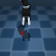
Meta-World
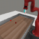
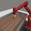
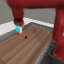
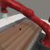
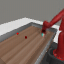
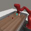
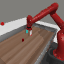
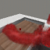
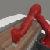
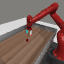
Citation
@inproceedings{
Mazzaglia2022Choreographer,
title={Choreographer: Learning and Adapting Skills in Imagination},
author={Pietro Mazzaglia, Tim Verbelen, Bart Dhoedt, Alexandre Lacoste, Sai
Rajeswar},
year={2022},
url={https://openreview.net/forum?id=BxYsP-7ggf}
}